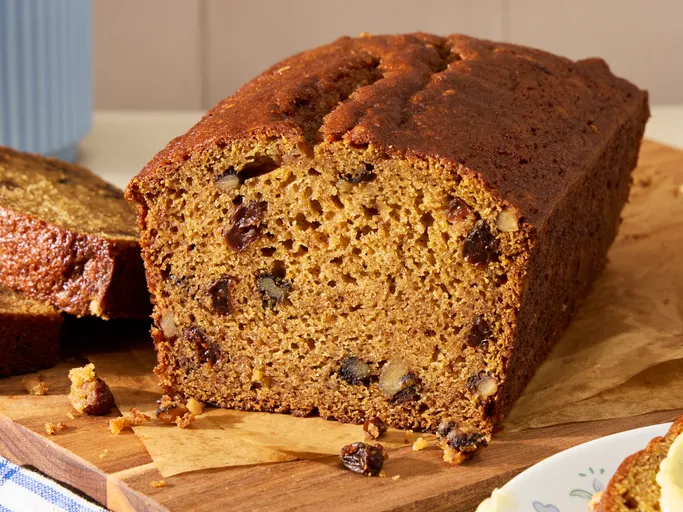

Butternut Squash Bread

This butternut squash bread is flavored with warm spices and has chopped
walnuts and juicy raisins dotted through it. It is a great bread for
Thanksgiving and a delicious way to use butternut squash!
This comforting bread is full of fall flavor thanks to warm spices like
cinnamon and cloves. Home bakers appreciate the moist texture, whether you
make quick bread loaves or muffins.
Ingredients
- 2 ⅔ cups white sugar
- ⅔ cup butter, softened
- 2 cups pureed cooked butternut squash
- 4 large eggs
- ⅔ cup water
- 3 ⅓ cups all-purpose flour
- 2 teaspoons baking soda
- 2 teaspoons baking powder
- 1 ½ teaspoons salt
- 1 teaspoon ground cinnamon
- 1 teaspoon ground cloves or to taste
- ⅔ cup chopped walnuts (Optional)
- ⅔ cup raisins (Optional)
Steps
-
Preheat the oven to 350 degrees F (175 degrees C). Grease two 9x5-inch
loaf pans.
-
Beat sugar and butter together in a bowl until light and fluffy. Stir
butternut squash, eggs, and water into sugar mixture.
-
Mix flour, baking soda, baking powder, salt, cinnamon, and ground cloves
in another bowl; stir into sugar mixture. Add walnuts and raisins; stir
until batter is just blended. Divide batter evenly between the prepared
loaf pans.
-
Bake in the preheated oven until a toothpick inserted into the center
comes out clean, about 1 hour. Cool in the pans briefly before removing
to cool completely on a wire rack.
Home